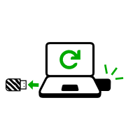

Restart on the new Tails
Shut down the computer.
Unplug the other USB stick and leave the new USB stick plugged in.
Switch on the computer and start on your new Tails USB stick.
The Boot Loader appears and Tails starts automatically after 4 seconds.
After 30–60 seconds, the Welcome Screen appears.
In the Welcome Screen, select your language and keyboard layout in the Language & Region section. Click Start Tails.
After 15–30 seconds, the Tails desktop appears.